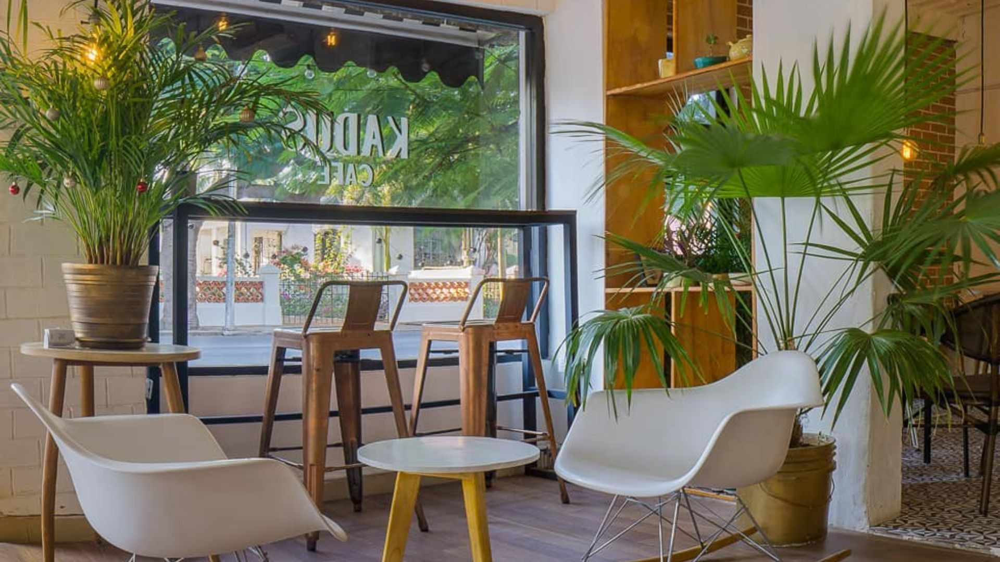

Kissa Café
Bienvenidos a Kissa Café
Aquí combinamos los mejores granos seleccionados con un ambiente acogedor para ofrecerte una experiencia única en cada taza.
Ya sea para empezar tu mañana con energía o para disfrutar una tarde relajada, tenemos el café perfecto para ti.

Sobre Nosotros
En Kissa Café nos apasiona la cultura del buen café. Desde nuestra fundación, trabajamos de la mano con productores locales para asegurar que cada taza respete el proceso artesanal y sostenible, llevando el mejor aroma del grano directamente a tu mesa.
Contacto
¿Tienes alguna duda o te gustaría reservar un evento? Escribenos: